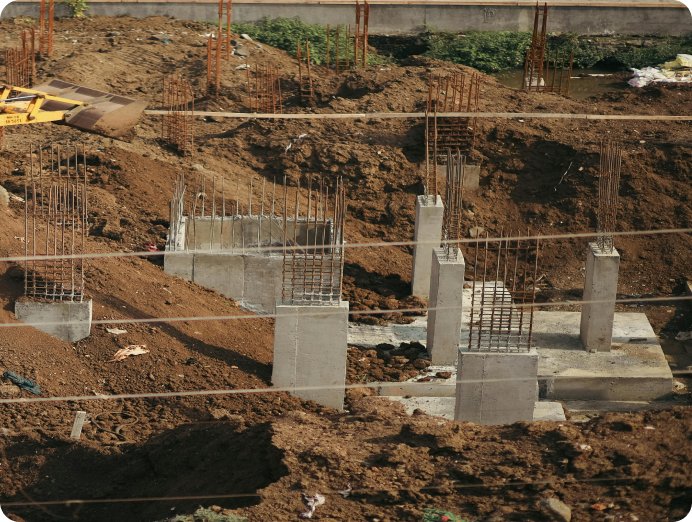
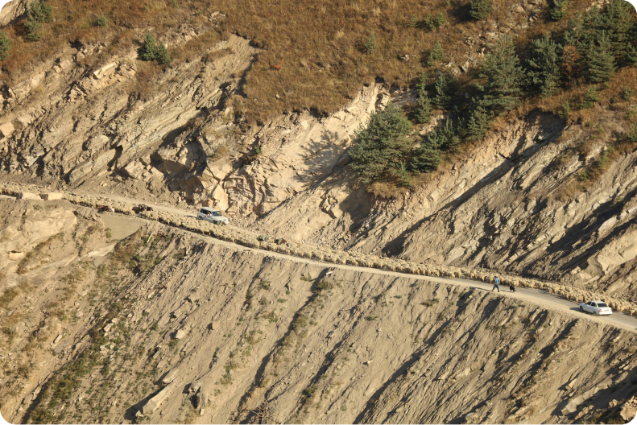
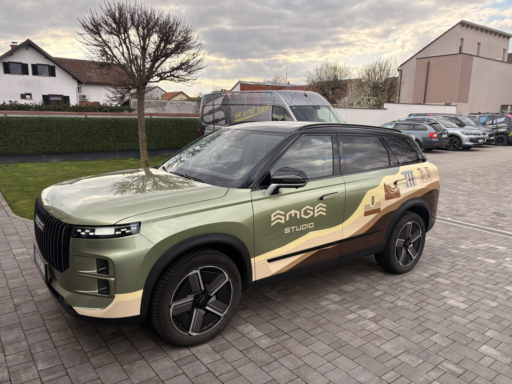

Founded in early 2025, GEOtest Engineering develops a contemporary approach to geotechnical engineering, combining thorough professional expertise with efficient and innovative working methods. As a dynamic and flexible company, we continuously contribute to the development of the geotechnical services market in Croatia and the European Union, while consistently adhering to the highest professional standards of the profession.
Our expert team operates in four key areas: geotechnical investigations, design, professional supervision, and consulting. What sets us apart is our ability to respond quickly and precisely to each challenge, with quality remaining our top priority. Regardless of the project scope, we approach every assignment with the same level of dedication and professionalism, developing solutions that are reliable, functional, and tailored to specific project conditions.

GEOtest Engineering excels in managing complex geotechnical projects from the first investigation to reliable realization. By combining in-depth field knowledge with a modern engineering approach, we develop practical solutions that meet professional standards and keep each project moving smoothly, precisely, and efficiently.
We combine practical field experience with clear digital workflows, fast communication, and carefully structured engineering decisions.
Our investigations define soil and rock conditions with reliable methods, giving each project a strong technical foundation.
We prepare geotechnical designs that are buildable, efficient, and adapted to the real behavior of the terrain.
We support investors, designers, and contractors with focused advice during planning, construction, and problem solving.
We interpret soil behavior, stability, settlement, and groundwater influence so technical choices remain safe and realistic.


GEOtest Engineering develops technical solutions tailored to your needs. We carefully consider your ideas and requirements, turning them into feasible and efficient solutions customized to the specifics of each project.
A geotechnical report summarizes the soil, rock, groundwater, and foundation conditions of a site and gives technical recommendations for safe design and construction.
A report is usually needed before design or construction when soil conditions must be confirmed. A geotechnical project is needed when technical solutions such as foundations, retaining systems, slopes, or anchors must be designed.
A geotechnical anchor transfers load into stable ground to support retaining structures or slopes. Consent depends on the project position, property boundary, local regulations, and whether anchors pass under neighboring land.
Use the contact section to send project information, location, and available documentation. We will review it and respond with the next practical steps.